Quick Start Tips
Welcome to NetObjects Fusion 4.0, the easiest, fastest way to build business Web sites.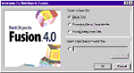
When you start NetObjects Fusion 4.0 for the first time and see this dialog, click OK to start a new site from scratch.
After you name your new site, it opens in Site view, where you see your Home page icon. NetObjects Fusion 4.0 offers five views of your site. Each view helps with a phase of site development. You switch among the views by clicking the five buttons on the control bar.
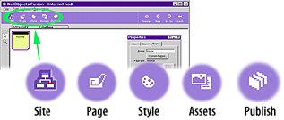
- Create your site's architecture in Site view.
- Add content and lay out each page in Page view.
- Choose the look of your site's buttons, banners, and text in Style view.
- Manage your site's files and links in Assets view.
- Generate HTML and upload it to your Web server in Publish view.
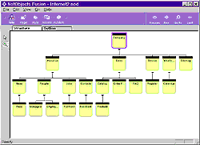In Site view, add pages, name them, and arrange them by dragging and dropping page icons. NetObjects Fusion 4.0 updates links between your pages as quickly as you adjust their structure.
When you want to add content to a page, double-click a page icon to see that page in Page view.
In Page view, you'll notice two labels for the two areas of your page: Layout and MasterBorder. A MasterBorder is the set of margins that surround your Layout. MasterBorders contain design elements that repeat across many pages, such as navigation bars and banners. Assign a MasterBorder to a range of pages to give them a consistent look. The Layout area is for the page's unique content. The labels change color to show which area you have selected.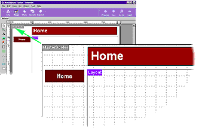
To add content to a page, select a tool from a toolbar and draw a box to contain the object. NetObjects Fusion 4.0 is an open environment: its four toolbars let you add any kind of content to your pages: pictures, navigation buttons, tables, sound, video, HTML pages created elsewhere, Java, ActiveX, database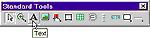 records, and much more. Find out the name of each tool by holding the pointer over it until a ToolTip appears. For example, to add text, select the Text tool and draw a text box on the page. When the blinking insertion point appears, type your text. To move the text box, click outside it, then inside it and drag it wherever you want.
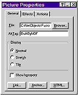Assign properties for the object or area you selected on the Properties palette. For example, you can add links, HTML, or Dynamic Actions to an object, or set the size of a page area. For a description of any property on a dialog or palette, right-click it and choose "What's This" from the shortcut menu. Or choose Help Topics from the Help menu to explore standard Windows Help topics.
When you're satisfied with your page, click the Preview button. NetObjects Fusion 4.0 quickly generates the site's HTML pages and displays them in your browser so you can test them. Choose between Microsoft and Netscape browsers in the NetObjects Fusion 4.0 Preferences dialog.
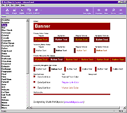In Style view, choose how text, banners, and buttons look in your site. Select a style name in the left pane to see its elements in the right pane. Click the Set Style button to apply the selected style. Choose among the 55 SiteStyles included with NetObjects Fusion 4.0, edit them, or create your own by clicking New.
Assets view helps you perform site housekeeping tasks efficiently. Quickly confirm the location of all external files in your site, or verify the site's links with a single click. NetObjects Fusion 4.0 uses a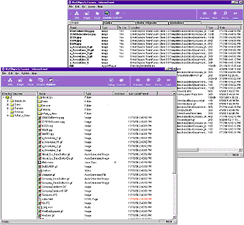liases for assets, so you can globally replace an item that appears on several pages--such as a picture, an applet, or an external link.
To publish your site, identify your Web server's location in Publish view and click Publish. NetObjects Fusion 4.0 generates the HTML for your pages, and uploads your site to your Web server with a browser-efficient directory structure. Or choose your own directory structure and other HTML output options.
To build your first site in ten minutes, see your Building Business Web Sites manual.
Add Business Applications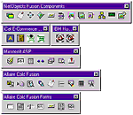
NetObjects Fusion Components make it easy to add dynamic database access, e-commerce and other applications to your Web site. Many are installed with NetObjects Fusion 4.0, and you
can also install the others shown here. Your partners and customers can interact directly with your business processes when you use components to give them dynamic, Web-based
access to databases and application servers, including Microsoft Active Server Pages and Allaire ColdFusion. Take a few minutes to add an on-line store to your product catalog with iCAT Commerce Online components.
Then add IBM HotMedia components to enhance your catalog with product images your customers can spin to examine all sides. To learn about the latest NetObjects Fusion Component releases, visit www.netobjects.com.
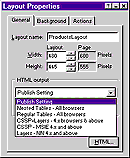
If You Know HTML...
NetObjects Fusion 4.0 can generate Everywhere HTML so your pages look the same in Microsoft and Netscape 2.x, 3.x, and 4.x browsers. Or choose options suited for older browsers, for
Netscape browsers only, or Microsoft browsers only. To tailor the generated HTML, you can mix and match output options for your whole site or individual pages, and place your content in either position-based or text-based layouts.
When you need more control, reference external HTML pages, which you can edit by launching your favorite HTML editor from within NetObjects Fusion 4.0. If you like, NetObjects Fusion 4.0 can manage your code's assets and file paths, so referenced assets are published correctly to your Web server.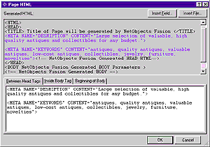
To fine tune NetObjects Fusion's HTML, add your own HTML or scripts to any object or the page itself and immediately see it embedded in generated code.
Discover the right mix of output and layout options for your pages in the NetObjects Fusion 4.0 User Guide.
If You're Upgrading
You can install NetObjects Fusion 4.0 without removing previous versions. Just install it in a unique folder. When you want to bring sites from previous
versions into NetObjects Fusion 4.0, see the "If You Are Upgrading" chapter in Building Business Web Sites for the best migration techniques. It also lists
all the new features and behaviors so you can put them to work quickly.
Welcome to the NetObjects Community!
Those who build Web sites with NetObjects Fusion have an active voice in its development and direction. Visit our newsgroups at
www.netobjects.com
and share your ideas, suggestions, and concerns. Thank you from all of us at NetObjects!